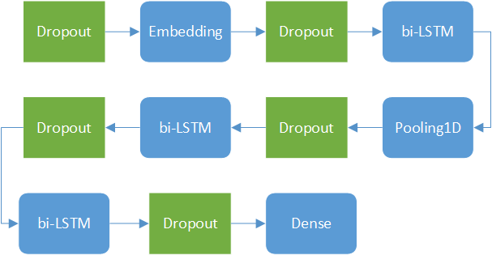

Tutorial I: Sentence topic classification
The best way to understand how Dandelion works is through practical examples.
In the first part of this tutorial, you’ll be guided through model definition and train/test/predict function compiling with a practical sentence classification task.
Sentence Classification Task
- Objective: classify each sentence into different topic categories.
- Variant: single-tag classification vs multi-tag classification
The sentence classification task is to using neural network model to determine the topic of each sentence, i.e., what each sentence is talking about. For example: time, location, cause, action and result.
To fulfill the task, we’ll build a model basically based on RNN, LSTM specifically.
Model Definition - Modules
For the full model definition, check the following code snippet:
import theano
import theano.tensor as tensor
from dandelion.module import *
from dandelion.update import *
from dandelion.functional import *
from dandelion.util import gpickle
class model(Module):
def __init__(self, batchsize=None, input_length=None, Nclass=6, noise=(0.5, 0.2, 0.7, 0.7, 0.7)):
super().__init__()
self.batchsize = batchsize
self.input_length = input_length
self.Nclass = Nclass
self.noise = noise
self.dropout0 = Dropout(name='dropout0')
self.dropout1 = Dropout(name='dropout1')
self.dropout2 = Dropout(name='dropout2')
self.dropout3 = Dropout(name='dropout3')
self.dropout4 = Dropout(name='dropout4')
W = gpickle.load('word_embedding(6336, 256).gpkl')
self.embedding = Embedding(num_embeddings=6336, embedding_dim=256, W=W, name='Embedding')
self.lstm0 = LSTM(input_dims=256, hidden_dim=100, name='lstm0')
self.lstm1 = LSTM(input_dims=256, hidden_dim=100, name='lstm1')
self.lstm2 = LSTM(input_dims=200, hidden_dim=100, name='lstm2')
self.lstm3 = LSTM(input_dims=200, hidden_dim=100, name='lstm3')
self.lstm4 = LSTM(input_dims=200, hidden_dim=100, name='lstm4')
self.lstm5 = LSTM(input_dims=200, hidden_dim=100, name='lstm5')
self.dense = Dense(input_dims=200, output_dim=Nclass, name='dense')
All the neural network modules are defined in dandelion.module in Python. For the sentence classification task, the following four NN modules will be used: Dropout, Embedding, LSTM and Dense.
To define our model, we’ll need to subclass the Module class from dandelion.module. The Module class is the base class for all our NN modules. There’s no complex abstraction here, all Module class done is to define some convenient interfaces for model parameter manipulation and no more. The Module class is quite similar with Pytorch’s nn.Module class.
Now we define all the network modules as our model’s attributes, such as
self.dropout0 = Dropout(name='dropout0')
You can drop the name here, it’s optional. However for possible parameter manipulation convenience later, we’d suggest giving a unique name for each network module here. (After version 0.14.0, you don't need to set the module name manually any more, they will be auto-named by the sub-module keys)
Note that all these definitions are done in the model’s __init__() part. Now we defined all the NN modules to be used in our model, but their relations, i.e., the network structure hasn’t been done. This part will be defined in model’s forward() and predict() functions later.
If you’re familiar with Lasagne or Keras, you’d notice that for LSTM module, Dandelion requires both the input dimension via input_dims and output dimension via hidden_dim meanwhile Lasagne or Keras would only require the output dimension, leaving the input dimension determined automatically by the framework. This is the cost you’d pay for greater flexibility by using Dandelion.
Model Definition - Structures
Now we’ll go through the network structure part. Usually a model needs to be trained first then it can be used in inference, so the network structure would involve these two different processes, i.e., training and inference.
We define the network structure for training in Model’s forward() function, as showed below.
def forward(self, x):
self.work_mode = 'train'
x = self.dropout0.forward(x, p=self.noise[0], rescale=False)
x = self.embedding.forward(x) # (B, T, D)
x = self.dropout1.forward(x, p=self.noise[1], rescale=True)
x = x.dimshuffle((1, 0, 2)) # (B, T, D) -> (T, B, D)
x_f = self.lstm0.forward(x, None, None, None)
x_b = self.lstm1.forward(x, None, None, None, backward=True)
x = tensor.concatenate([x_f, x_b], axis=2)
x = pool_1d(x, ws=2, ignore_border=True, mode='average_exc_pad', axis=0)
x = self.dropout2.forward(x, p=self.noise[2], rescale=True)
x_f = self.lstm2.forward(x, None, None, None)
x_b = self.lstm3.forward(x, None, None, None, backward=True)
x = tensor.concatenate([x_f, x_b], axis=2)
x = self.dropout3.forward(x, p=self.noise[3], rescale=True)
x_f = self.lstm4.forward(x, None, None, None, only_return_final=True)
x_b = self.lstm5.forward(x, None, None, None, only_return_final=True, backward=True)
x = tensor.concatenate([x_f, x_b], axis=1)
x = self.dropout4.forward(x, p=self.noise[4], rescale=True)
y = sigmoid(self.dense.forward(x))
return y
Within the forward() function, we first set the work mode to train. This is an optional step, which will be explained later. Then the input text sequence is fed through a Dropout and Embedding module to convert integer indices into character embedding vectors. After that are two LSTM modules with forward and backward scanning directions, resulting in a bidirectional LSTM. Output of this bi-LSTM is then subsampled along the time dimension, and then fed into another bi-LSTM. Note that for the latter bi-LSTM, we only need the last time frame as output. Finally a Dense module followed by a sigmoid activation gives the sentence classification result.
The network structure can be plotted as

Here the five Dropout modules are plotted with green color, means they only exist during training process.
def predict(self, x):
self.work_mode = 'inference'
x = self.embedding.predict(x)
x = x.dimshuffle((1, 0, 2)) # (B, T, D) -> (T, B, D)
x_f = self.lstm0.predict(x, None, None, None)
x_b = self.lstm1.predict(x, None, None, None, backward=True)
x = tensor.concatenate([x_f, x_b], axis=2)
x = pool_1d(x, ws=2, ignore_border=True, mode='average_exc_pad', axis=0)
x_f = self.lstm2.predict(x, None, None, None)
x_b = self.lstm3.predict(x, None, None, None, backward=True)
x = tensor.concatenate([x_f, x_b], axis=2)
x_f = self.lstm4.predict(x, None, None, None, only_return_final=True)
x_b = self.lstm5.predict(x, None, None, None, only_return_final=True, backward=True)
x = tensor.concatenate([x_f, x_b], axis=1)
y = sigmoid(self.dense.predict(x))
return y
Now we define the network structure for inference in model’s predict() function, as showed above.
During inference process, the model’s network structure is simpler than in training. Note that there’s no Dropout modules here. The rest part of the predict() function is quite the same with forward() function, except that now all the modules’ predict() interface are called instead of the forward() interface as in model’s forward() function.
Unified Calling Interface
For users familiar with Keras or Lasagne, you might be confused that we define separate functions for both training and inference. In Keras/Lasagne, the common way is to define the model’s structure and use a flag parameter to tell the model to work in training mode or in inference mode.
The reason we do this is because it allows us to use different network structures for different purpose, i.e., the model’s network structure for training can be quite different from the structure for inference.
However the cost of this flexibility is that we’d have to define the network structure twice even though in most scenarios the model’s network structure is the same for both training and inference.
Fortunately we’ve considered this and provide a unified calling interface in Dandelion. For the network structures defined before, they can be re-written by the unified calling interface as follows
def call(self, x, work_mode='train'):
self.work_mode = work_mode
x = self.dropout0(x, p=self.noise[0], rescale=False)
x = self.embedding(x) # (B, T, D)
x = self.dropout1(x, p=self.noise[1], rescale=True)
x = x.dimshuffle((1, 0, 2)) # (B, T, D) -> (T, B, D)
x_f = self.lstm0(x, None, None, None)
x_b = self.lstm1(x, None, None, None, backward=True)
x = tensor.concatenate([x_f, x_b], axis=2)
x = pool_1d(x, ws=2, ignore_border=True, mode='average_exc_pad', axis=0)
x = self.dropout2(x, p=self.noise[2], rescale=True)
x_f = self.lstm2(x, None, None, None)
x_b = self.lstm3(x, None, None, None, backward=True)
x = tensor.concatenate([x_f, x_b], axis=2)
x = self.dropout3(x, p=self.noise[3], rescale=True)
x_f = self.lstm4(x, None, None, None, only_return_final=True)
x_b = self.lstm5(x, None, None, None, only_return_final=True, backward=True)
x = tensor.concatenate([x_f, x_b], axis=1)
x = self.dropout4(x, p=self.noise[4], rescale=True)
y = sigmoid(self.dense(x))
return y
As we can see from the code above, now we do not call the sub-module’s forward() or predict() interface anymore. By setting the work_mode parameter, Dandelion will automatically call the sub-module’s forward() or predict() interface accordingly. Now we only need define the network structure for once, and use it for both training and inference.
Model Compiling
Theano requires compiling the computation graph before using it. The model compiling is actually more relevant to Theano than to Dandelion.
print(' compiling train func')
X = tensor.imatrix('X')
Y = tensor.fmatrix('Y')
output_score = model.forward(X)
B = Y.shape[0]
B = tensor.cast(B, 'float32')
loss = tensor.sqrt(tensor.sum((output_score - Y)**2)) / B * 100
Y_out_positive = tensor.zeros_like(output_score)
Y_out_positive = tensor.switch(output_score>0.5, Y, Y_out_positive)
acc_positive = tensor.sum(Y_out_positive) / tensor.sum(Y)
Y_out_negative = tensor.zeros_like(output_score)
Y_out_negative = tensor.switch(output_score<=0.5, 1.0 - Y, Y_out_negative)
acc_negative = tensor.sum(Y_out_negative) / tensor.sum(1.0- Y)
params = model.collect_params()
updates = adadelta(loss, params)
updates.update(model.collect_self_updates())
train_fn = theano.function([X, Y], [loss, acc_positive, acc_negative], updates=updates, no_default_updates=False)
-
Model Calling Here we call the model defined before by
model.forward(). Of course you can also call the model by the unified calling interface asmodel.call(…, work_mode=‘train’) -
Parameters Collecting Parameters to be trained by optimizer can be collected from the model by calling
model.collect_params(), simply like that. -
Updates Collecting In Dandelion, there’re two kinds of parameters: parameters to be updated by optimizer and parameters to be updated by other methods. The updates expression of the latter part of parameters can be collected by calling
model.collect_self_updates(). Returned is adictdescribing updates for each parameter accordingly. After these 3 steps, now we can compile the training function by Theano simply by
train_fn = theano.function([X, Y], [loss, acc_positive, acc_negative], updates=updates, no_default_updates=False)